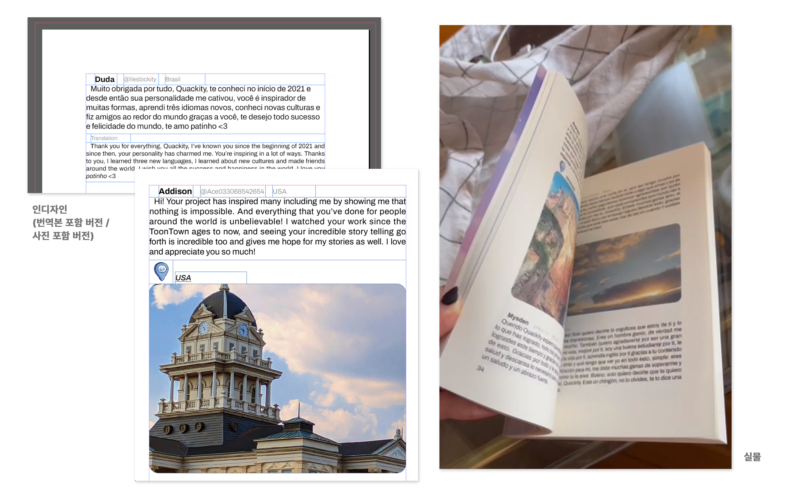

전 세계에서 보내는 편지
#DESIGN
개요
Quackity Subs 팀에서 진행한 프로젝트로, 전 세계의 팬들이 보내는 메세지를 모아 책으로 제본하여 실물을 직접 전해주었다. 해당 프로젝트에서 한국어와 일본어를 영어로 번역하고 전체 편집디자인을 담당했다.
기간:
2024. 06. 01 ~ 2024. 07. 13
사용:
Adobe Indesign, Adobe Photoshop
기획
아이디어

7월에 있을 스페인 오프라인 행사에서 선물로서 전해주기 위해 6월부터 준비를 시작했다. 첫 주에는 손으로 그린 스케치에 팀원들의 아이디어를 모아 목차를 구성하고 대략적인 레이아웃도 구상했다. 콘텐츠의 틀이 어느정도 잡히고 난 뒤 인터넷에 팬들이 편지, 사진, 노트, 추천하는 음악을 보낼 수 있는 폼을 오픈하고 스케치를 바탕으로 레이아웃 겸 템플릿을 제작하였다.
스케치
정해진 게 거의 없는 상황에서 먼저 디자인을 담당하겠다고 제안했고 팀원들은 작업량에 무리가 있다면 적극적으로 돕겠다고 해주었다. 내가 다른 할 일을 정리하는 동안 팀원들이 아이디어를 구체화할 수 있도록 팀원들에게 피그마 사용법을 간단하게 알려주었고, 목차, 스타일 가이드, 레이아웃, 그리고 팬들이 보낸 콘텐츠를 담을 템플릿을 구상한 뒤, 인디자인으로 옮겨 작업을 시작했다.
레이아웃 디자인
레이아웃
크레딧
목차
소개
챕터 표지
템플릿
편지지 템플릿
이백여 명이 보낸 편지와 사진을 156장 가량의 예산 안에서 넣어야 했기에 넉넉한 여백이나 구분선 등의 추가요소 없이 콘텐츠를 효율적으로 분리 및 그룹화하는 것이 관건이었다. 주요 콘텐츠가 아니지만 꼭 필요한 부가 요소의 글씨 크기를 줄이고 색을 옅게 하는 방식을 활용했다. 특히 편지를 보낸 사람의 정보는 사람에 따라 길이가 천차만별이 될 수 있었기에 각각의 영역을 부여하기보다는 사이 여백을 고정해 가로로 나열하는 방식을 선택했다.
혼자서는 도저히 끝낼 수 없는 양이었기에 다른 어도비 툴을 다룰 줄 아는 팀원이 아메리카 대륙 부분 작업을 대신 맡아주었다. 이를 위해 텍스트 스타일을 지정하고 여백 수치 및 상황에 따른 가이드를 정리해 템플릿으로 만들어 보내주었다.
임팩트 템플릿

본인이 최애와 최애의 프로젝트에 어떤 영향을 받았는지 남기되 코멘트처럼, 편지보다는 짧게 적도록 하고 양쪽에서 올라오는 말풍선처럼 구성하였다. 가독성을 위해 본문의 왼쪽 정렬은 유지하였다.
노래 추천 템플릿
최애에게 추천하고 싶은 노래와 추천하는 이유를 넣는 파트였다. 받은 노래를 모두 추가해 둔 스포티파이 플레이리스트도 따로 만들고, 이와 연결되는 QR코드를 그림과 함께 챕터 표지에 넣었다.
번역이 필요한 노래 제목의 경우를 대비한 템플릿도 따로 만들고, 해당 노래가 어떤 언어로 되어있는지도 적었다. 해당 챕터도 다른 팀원이 반복작업을 도와주었다.